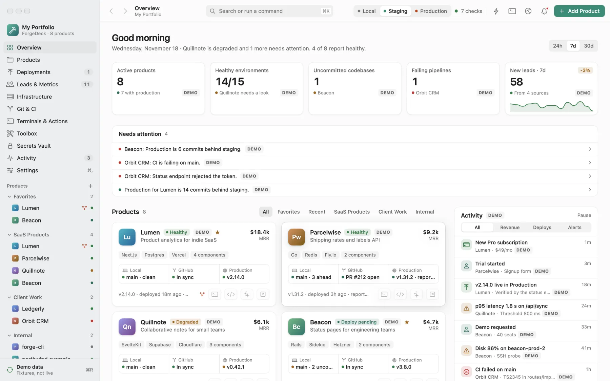
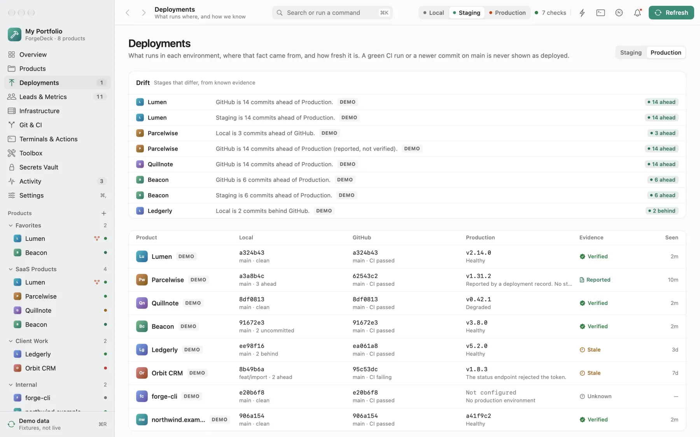
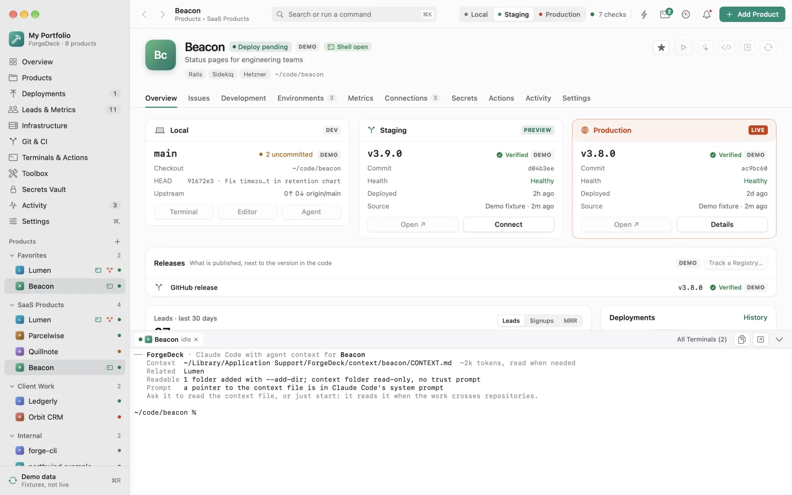
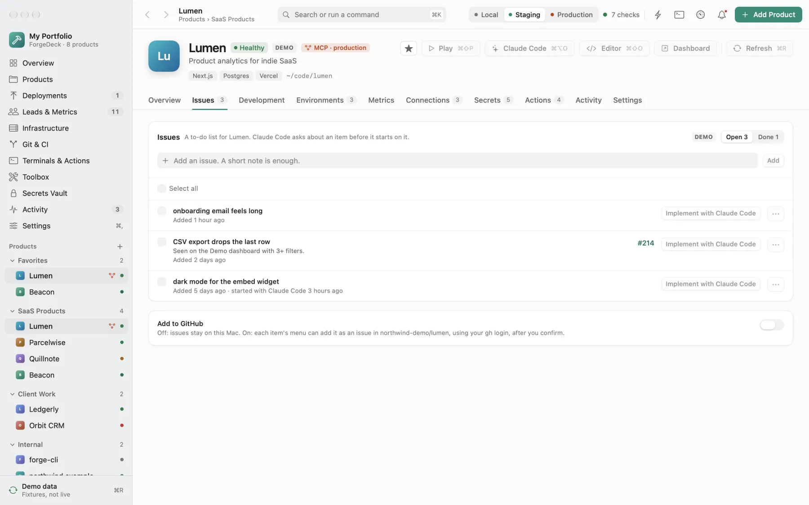
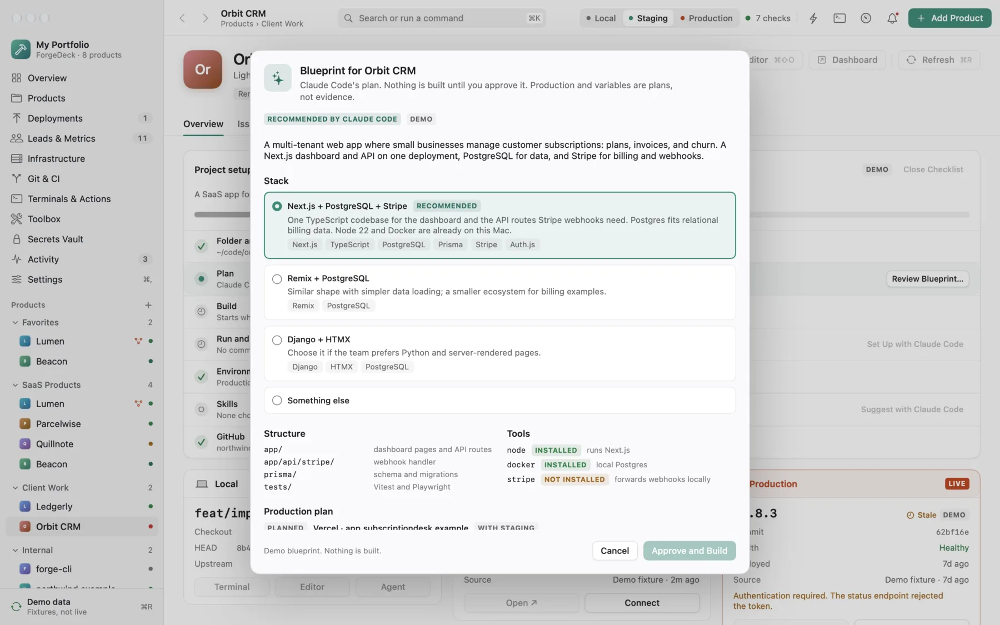
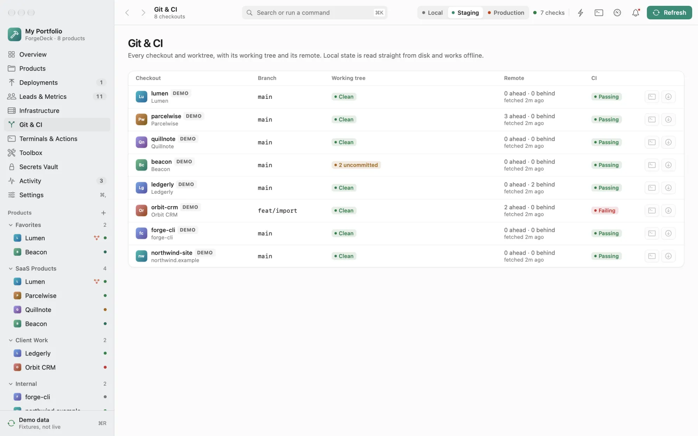
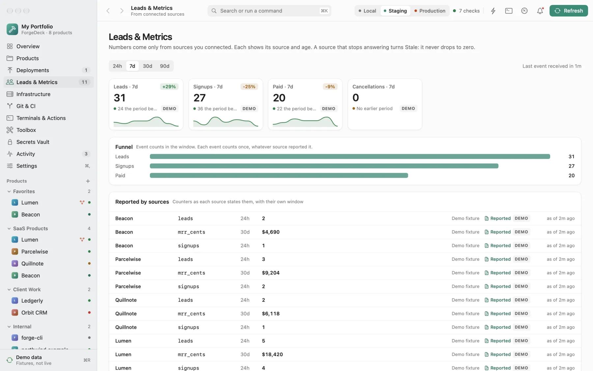
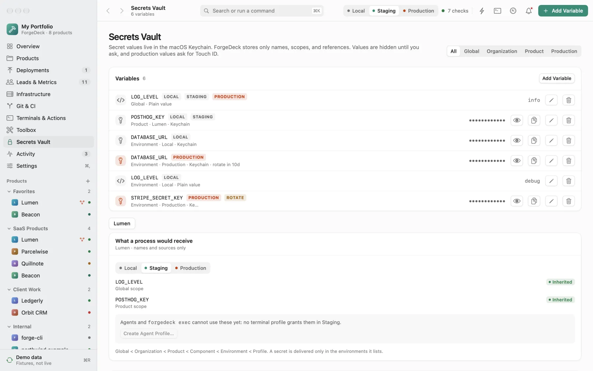
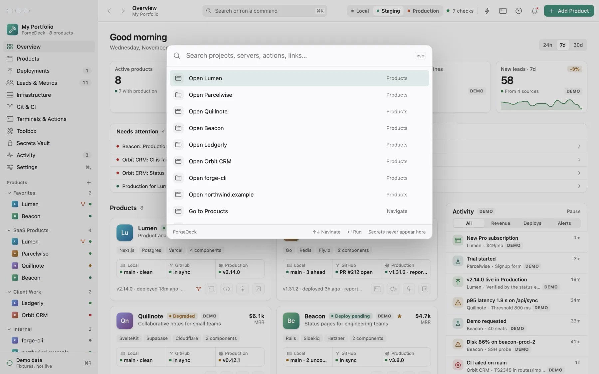

ForgeDeck One Mac window for every product you build
You run a SaaS, a client site, a plugin, an app. Each has its own repo, host, dashboard, and terminal tab. ForgeDeck puts them side by side: what's live in production and how that's known, what's broken right now, and one click into a terminal, your editor, or an AI agent in the right folder.
Free · native macOS · no account, no server, no telemetry · secrets stay in your Keychain
What it's for
ForgeDeck is for the developer, indie maker, or small team that ships more than one thing. It answers the questions you'd otherwise answer by opening ten tabs.
| The question | How ForgeDeck answers it | Sheet |
|---|---|---|
| Is anything broken right now? | One Needs attention list across every product: failing CI, endpoints that stopped answering, production falling behind, a disk filling up. | 1 |
| Which version is live in production, and how do I know? | Local, GitHub, Staging, and Production side by side, each with where the fact came from and how old it is. Never guessed from a green build. | 2 |
| How do I run this project again? | The Play button works out how it runs (dev server, simulator, Mac app, Docker, a local WordPress site) and starts it. | 3 |
| Can an AI agent just fix this? | Keep a to-do list per product and send items to Claude Code, Codex, Gemini, or OpenCode, started in the right folder with a map of the code. | 4 |
| How do I start something new? | Describe the idea. Your agent recommends a stack in a blueprint you approve, then builds it. The project arrives in ForgeDeck with Play, an agent, and its environments ready. | 5 |
| Which CI run failed, and why? | Every checkout's branch, uncommitted work, and CI status in one table. A failed run opens its log trimmed to the error, with a fix prompt. | 6 |
| Did anyone sign up or pay today? | Leads, signups, and payments from each product, read from sources you connect, each labelled with where it came from. | 7 |
| Where's the staging API key? | A Keychain vault scoped by product and environment. Commands get only the variables you allow; production asks for Touch ID. | 8 |
The tour
Every picture below is the real app, filled with eight demo products. Nothing is mocked up.


See every product at once
Open ForgeDeck in the morning and know where things stand before you open anything else.
- Needs attention What to look at first, across all products: production behind staging, CI failing on main, a status endpoint rejecting its token.
- At a glance Healthy environments, codebases with uncommitted work, failing pipelines, and new leads this week.
- Product cards Each product's local branch, GitHub state, and production version in one row, with buttons for its terminal, editor, and agent.
- Groups SaaS, client work, internal tools: group them your way, star favorites, drag between groups.
- Activity New subscriptions, releases going live, slow endpoints, failed builds, as they happen.


Know what's live, and how you know
"Deployed" should mean something. ForgeDeck never assumes production from a main branch, a green CI run, or a release tag. Each stage says how it's known.
- Localmain · cleanVerified · git on this Mac
- GitHubin syncVerified · GitHub API
- Stagingv2.15.0-rc.2Reported · not checked
- Productionv2.14.0Stale · 3 days old
- Verified
- ForgeDeck checked it: git, the GitHub API, the site's own version URL or status endpoint.
- Reported
- Something said so, like a deployment record. Not confirmed.
- Stale
- It was true. It's too old to trust now.
- Unknown
- No evidence, and the reason why.
Production is read from what you connect: a version URL, a status endpoint, GitHub deployments, an SSH host (read-only commands), Docker, or a release channel like WordPress.org, npm, or PyPI. Optional open-source companions for Node, Python, and WordPress report the exact running commit.


Run it, open it, work on it
Every product is one click from running. No more digging through a README to remember the dev command.
- WebStarts the dev server, opens the page when it answers
npm run dev → localhost:5173 - MobileBuilds and runs on the iPhone simulator or an Android emulator
npx cap run ios - DesktopStarts the Mac, Tauri, or Electron app
swift run · ./build.sh - SiteOpens a WordPress plugin's local site admin
site.local/wp-admin
- Terminal In the product's folder, inside ForgeDeck or in Terminal, iTerm, Ghostty, or Warp. Drop a file or screenshot on it to type its path.
- Editor Cursor, VS Code, Zed, or Xcode, in its own window for that project.
- Agent Claude Code and others start in the folder with a compact map of the repo and any repos you link to it.


Hand work to your AI agent
Jot a short note, like "CSV export drops the last row". Press Implement with Claude Code. The agent opens in that product's folder, reads the code, tells you what it thinks the note means, and asks its questions before it changes anything.
- Issues per product A to-do list that lives on your Mac. Select several and the agent asks about all of them at once, then works through them one at a time with tests after each.
- Any agent Claude Code, Codex, Gemini CLI, OpenCode, or Antigravity. Pick one in Settings.
- The right context The agent gets a short map of the product and of related repos, not a wall of text. It reads more only when the work needs it.
- GitHub, if you want Copy an item to a GitHub issue with your own
ghlogin. Off until you turn it on. - AI usage A side panel shows tokens used and limits left, read from your agents' local logs. Nothing is uploaded.


Start new, or let the agent set up
New Project turns an idea into a working project. ForgeDeck makes the folder, the Git repository, and the product; your agent recommends a stack in a blueprint. You approve it, and the agent builds it. For an existing repository, ask once and the agent works out the setup. Either way it writes to a file, ForgeDeck checks it, and you approve before anything changes.
- New projectStack, structure, build steps, production plan, variable names
.forgedeck/blueprint.json - EnvironmentsWhere it's deployed and how to read the live version
.forgedeck/environments.json - RunHow it runs, tried first, filled into the Play button
.forgedeck/run.json - LeadsWhat it collects, and which of those to track
forgedeck leads - SkillsAgent skills and plugins that fit the product
.forgedeck/skills.json
The agent only proposes and builds locally. It never deploys, pushes, or sees a token, and installs no skills itself. A planned production host stays Planned until a check answers.


Catch what's uncommitted or failing
Every checkout and worktree on your Mac in one table: branch, uncommitted work, ahead or behind, and whether CI passes.
- Read from disk Local state comes straight from git and works offline.
- CI failures, explained A failed GitHub Actions run opens its log trimmed to the error, and writes a fix prompt to hand to your agent.
- Releases Which version is published on WordPress.org, npm, PyPI, or GitHub, next to the version in your code.


See what your products bring in
Leads, signups, payments, and cancellations from every product in one place, so a quiet contact form doesn't go unnoticed for a week.
- Only real sources Numbers come from endpoints you connect. Each shows its source and age; a source that stops answering turns Stale rather than dropping to zero.
- Set up by your agent It finds what the product collects (forms, signups, orders, bookings), asks which to track, and builds the check.


Keep secrets out of .env files
API keys and database URLs live in the macOS Keychain, scoped to a product and an environment, and go only to the commands you allow.
- Scoped Global, product, environment, or profile. See exactly what a process would receive before it runs.
- Production asks first Revealing or using a production secret asks for Touch ID.
- Safe for agents
forgedeck execruns a command with the right variables. Agents see names, never values.


Keyboard first, and a command line
Press ⌘K to open any product, start its agent, run an action, or jump to a page. Every button has a palette command.
- The
forgedeckcommand The app is also a CLI:list,status,exec,context,ci,usage. Your agents use it too. - Remote Forge Remote keeps Claude Code's Remote Control running, so you can work on any product from the Claude app on your phone.
Privacy and safety
- Everything stays on this Mac. No account, no analytics, no server.
- Secret values live only in the macOS Keychain. They are never written to ForgeDeck's files, logs, exports, or command arguments.
- Variables are scoped to a product and environment and go only to the commands you allow. Production secrets ask for Touch ID.
- External systems are read-only by default. Anything that writes remotely or touches production names its exact target and needs a press and hold.
- SSH runs a fixed list of read-only commands, with strict host key checking.
- The only automatic network request is a daily check for a new release on GitHub. It sends nothing about you, and it can be turned off.
Install
- Download the zip from the latest release and unzip it.
- Drag ForgeDeck.app into Applications.
- Open it. ForgeDeck is signed with a Developer ID and notarized by Apple, so it opens like any other app.
- Add a product. A folder, a GitHub repository, an SSH host, or just a name. Or start with the demo products to look around.
Updates install themselves, after ForgeDeck checks that the new copy is signed by the same developer.
Revisions
| Rev | Description |
|---|---|
| 0.13.8 | Point a product's repository at another owner or name from its Settings tab, for example after a transfer from xyz/repo1 to abc/repo1. GitHub data refreshes from the new repository, and the local folder's origin can follow it. |
| 0.13.7 | Select any number of issues, GitHub ones included, and plan or implement them in one agent session. Finished plans move their issues to Done, and done GitHub issues can be closed from ForgeDeck. Quitting closes ForgeDeck all the way, ending every terminal's processes. |
| 0.13.6 | Issues include the product's GitHub issues: open ones show under On GitHub, and Add to List or Implement brings them to your agent. Add issues from the command line with forgedeck issue add, and list them with forgedeck issue list. |
| 0.13.5 | Each product can start its own AI agent and model. Restart Agent loads newly installed skills into a running session. AI Usage shows Antigravity (agy) limits and flags paid weekly usage that resets unused within a day. |
| 0.13.4 | Products have a Memory: rules and key facts every agent session reads first. Agents add what they learn, and you edit or delete anything in the Memory tab. |
| 0.13.3 | Add a GitHub repository and clone it in one step: Add Product shows the folder it goes into, and the clone becomes the product's local folder. An existing folder is never overwritten. |
| 0.13.2 | AI Usage shows Claude Code's plan limits: the 5-hour window, the weekly window, and weekly limits per model, with reset times and your plan, checked through Claude Code the way /usage does. |
| 0.13.1 | Forge Remote: every session you start from the Claude app starts clean, with no long-lived session that piles up old context. It starts reliably when ForgeDeck reopens, stopping a server left from the last run instead of failing. |
| 0.13.0 | Plan a feature with your agent: review its steps as a checklist, then execute, revise, or discard. Pick a product by number or part of its name with forgedeck find, or /products and /product in Claude Code and Forge Remote, which now load a product without asking for approval. Issues the agent finishes move to Done with its summary. New projects get skill suggestions with the blueprint. |
| 0.12.0 | New Project: describe an idea and your agent plans the stack in a blueprint you review and approve, then builds it. Or pick a starter (Next.js, FastAPI, Swift, Go, Rust, WordPress, and more). A setup checklist tracks every step and picks up where it stopped. Set up leads for any product from the Leads page. |
| 0.11.2 | Select several issues and implement, finish, or delete them together; the agent asks about all of them first. Skill suggestions appear the moment the agent writes them. Drop files, folders, or screenshots on a built-in terminal to type their paths. |
| 0.11.1 | Issues per product: a to-do list where Implement with your agent opens the item in a terminal, and the agent asks what it needs to know before it starts. Signed with a Developer ID and notarized. Claude Code no longer asks to trust the context folder every session. |
| 0.11 | Skills per product: your agent suggests skills and Claude Code plugins that fit the work. Install them with one click; active ones are named in the agent's prompt. |
| 0.10 | Set Up Leads: your agent finds what a product collects, asks which to track, and sets up the check. forgedeck leads confirms leads are arriving. |
| 0.9 | Set Up Run: your agent works out how a product runs, tries it, and proposes the commands for one review. |
| 0.8 | Repositories propose their environments, production included, for review. Nothing becomes production without your approval. |
| 0.7 | Forge Remote: work on any product from the Claude app. Agent context loads only what a task needs. |
| 0.6 | Version URLs and a Releases card for WordPress.org, npm, PyPI, and GitHub. |
| 0.5 | Agent skills in the Toolbox, repository tools, and MCP servers per product. |
| 0.1–0.4 | Products, the evidence chain, Keychain secrets, the forgedeck command, the built-in terminal, CI failure logs, AI usage, Play, and automatic updates. |